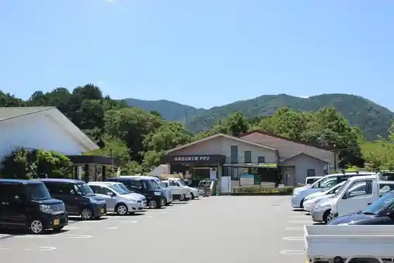
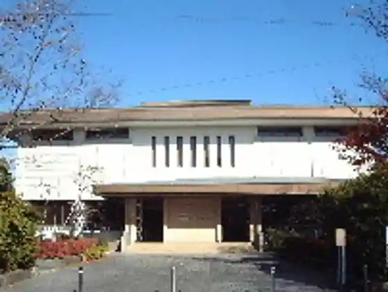
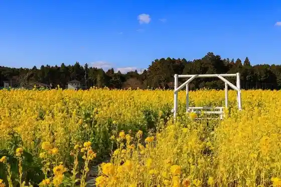

Furusato Aji Kobo Aguri
Tamaki, Mie · 0596-58-8686 · Official / source link

Asupia Tamaki Aguri no Himawari Hatake
Tamaki, Mie · 0596-58-8686 · Official / source link
Oga Hasu (Tamaki Town Hall Yokochi Hori)
Tamaki, Mie · 0596-58-8200 · Official / source link
Murayama Ryuhei Memorial Museum
Tamaki, Mie · 0596-58-8212 · Official / source link

Asupia Tamaki Aguri no Na no Hanahata
Tamaki, Mie · 0596-58-8686 · Official / source link

Asupia Tamaki Fureai no Kan (Tamaki Hironori Onsen)
Tamaki, Mie · 0596-58-8800 · Official / source link
Asupia Tamaki Aguri no Kosumosu Hatake
Tamaki, Mie · 0596-58-8686 · Official / source link
Tomi Mukaiyama Tamiya Tera
Tamaki, Mie · 0596-58-7007 · Official / source link
Tamaki Suihen no Raku Ko
Tamaki, Mie · 0596-58-8205 · Official / source link
Furusato Aji Kobo Aguri (Tezu Kuri Soseji Kyoshitsu)
Tamaki, Mie · 0596-58-8686 · Official / source link
Asupia Tamaki
Tamaki, Mie · 0596-58-8800 · Official / source link
Gen Kabuto Sha
Tamaki, Mie · 0596-58-8050 · Official / source link
Sen Hiki Shrine Fuji no Hana
Tamaki, Mie · 0596-58-7007 · Official / source link
Tamaru Castle Ruins
Tamaki, Mie · 0596-58-8204 · Official / source link
Higashi Gaijo Ta Shrine
Tamaki, Mie · 0596-58-4153 · Official / source link
Sachi Shrine
Tamaki, Mie · Official / source link
Tamaru Shrine
Tamaki, Mie · 0596-58-8204 · Official / source link
Tamaki Fureai Farm
Tamaki, Mie · 0596-58-3838 · Official / source link
Ko Yasushi Tera
Tamaki, Mie · 0596-58-2423 · Official / source link
Azuchi Park
Tamaki, Mie · 0596-58-8204 · Official / source link
Yamada Tera
Tamaki, Mie · 0596-58-8204 · Official / source link
Tamaki Ei Tenisukoto
Tamaki, Mie · 0596-58-6331 · Official / source link
Ta no Ie Shrine
Tamaki, Mie · 0596-58-8204 · Official / source link
Ka no Shrine
Tamaki, Mie · 0596-58-8204 · Official / source link
Fujimi Mon
Tamaki, Mie · 0596-58-8378 · Official / source link